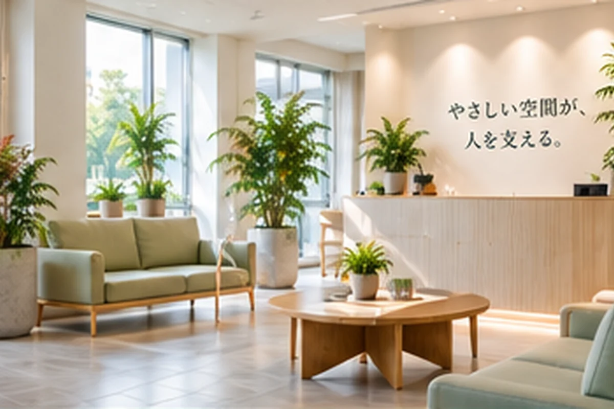

01
受付
案内や受付業務を妨げない位置に。
CLINIC GREEN
病院・クリニック向け観葉植物レンタル。受付・待合・共用部などで、清潔感、安全な動線、管理しやすさを優先して植物・鉢・配置を考えます。
SPACE IDEAS
設置を検討するときに確認したいポイントを、用途ごとに具体的に整理しています。

案内や受付業務を妨げない位置に。

椅子・通路との距離を取り、清掃しやすく。
人の流れと見通しを優先して配置。
業務導線と管理負担を確認して選定。
CHECK BEFORE PROPOSAL
設置前に現地条件や写真を確認し、無理のない配置を考えます。
設置前に現地条件や写真を確認し、無理のない配置を考えます。
設置前に現地条件や写真を確認し、無理のない配置を考えます。
設置前に現地条件や写真を確認し、無理のない配置を考えます。
FAQ FOR THIS SPACE
はい。椅子・受付・出入口の位置を確認し、通行や清掃を妨げにくいサイズ・配置を優先して考えます。
訪問や作業の時間帯については、診療・受付業務への影響を確認しながらご相談内容を整理します。
設置場所の写真や環境を確認し、植物選びや置き位置を検討します。必要に応じて現地条件も確認します。
ISSUE → PROPOSAL → INSTALL → CARE
設置事例は「課題 → 提案 → 設置 → 継続管理」の順で確認できる構成です。写真だけでなく、植物・鉢・配置をどう考えたかまで分かりやすく整理します。
ほかの用途を見る →